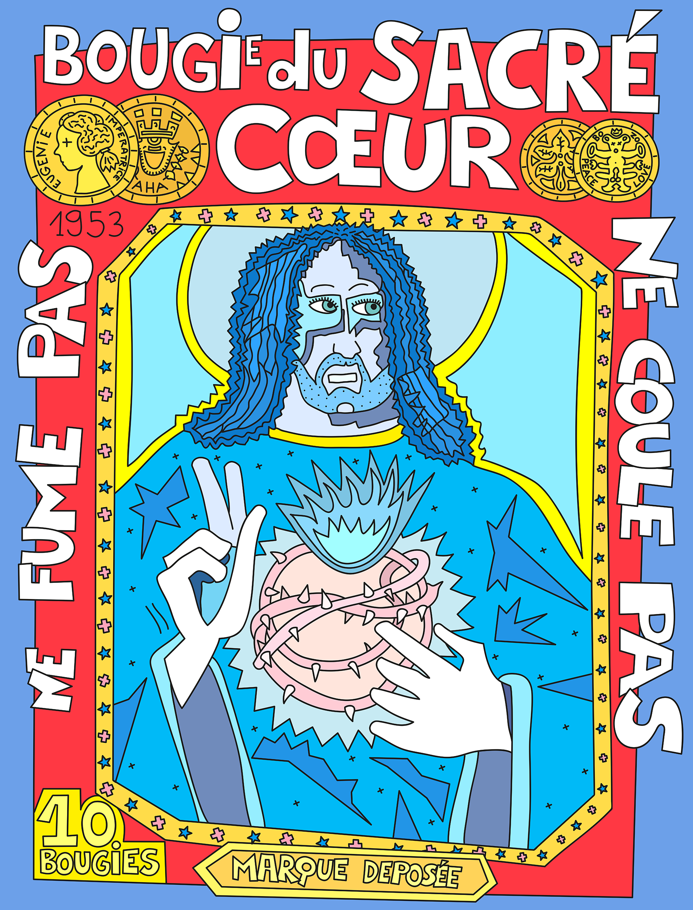

En se début d'année, pour fêter mes choix de sites qui se portent souvent sur des sujets graphiques, voici le site de Joel Laroche Joubert, artiste Réunionnais multi-communicant. Ce dernier a même fait un vrai faux site du magazine TaM TaM, le « magazine de la communication des Mascareignes », un magazine pro des métiers de la pub et de la com.
La rédaction du magazine officiel en a d'ailleurs beaucoup ri et conseille « mêmes à nos connaissances d'aller se moquer d'eux-mêmes en visitant le site satyrique de Joël ».

Hélas, aujourd'hui le portail guetali a fait fi des vielles pages perso, notamment les pages précités. Joël, si tu me lis et que tu as encore une archive de ce site satirique du guide Tam Tam, écris-moi, je suis près à l'héberger pour garder le souvenir.
Quand à mes lecteurs, déçus de voir disparaître ce site hautement graphique au style si particulier, je les invite à suivre le fil twitter de l'artiste qui s'est heureusement mis aux réseaux sociaux.